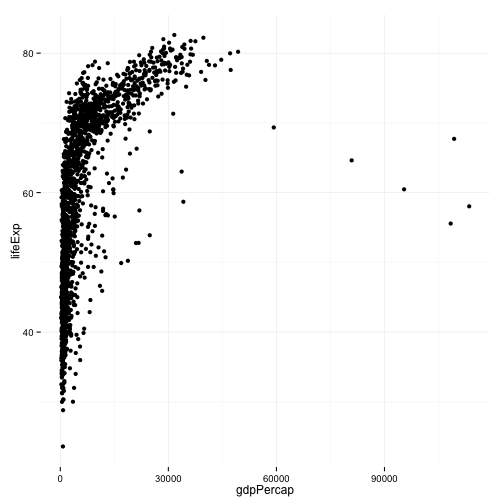

Data Visualization
Week 1
Kieran Healy
Duke University
What Data Values are Displayed in this Figure?

What about this one?


Let's get some Data ...
library(ggplot2)
library(devtools)
gapminder.url <- "https://raw.githubusercontent.com/socviz/soc880/master/data/gapminder.csv"
data <- read.csv(url(gapminder.url))
head(data)
## country continent year lifeExp pop gdpPercap
## 1 Algeria Africa 1952 43.077 9279525 2449.008
## 2 Algeria Africa 1957 45.685 10270856 3013.976
## 3 Algeria Africa 1962 48.303 11000948 2550.817
## 4 Algeria Africa 1967 51.407 12760499 3246.992
## 5 Algeria Africa 1972 54.518 14760787 4182.664
## 6 Algeria Africa 1977 58.014 17152804 4910.417
... and Plot it
p <- ggplot(data, aes(x=gdpPercap, y=lifeExp))
p + geom_point()
